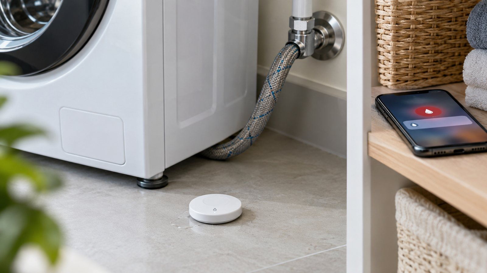
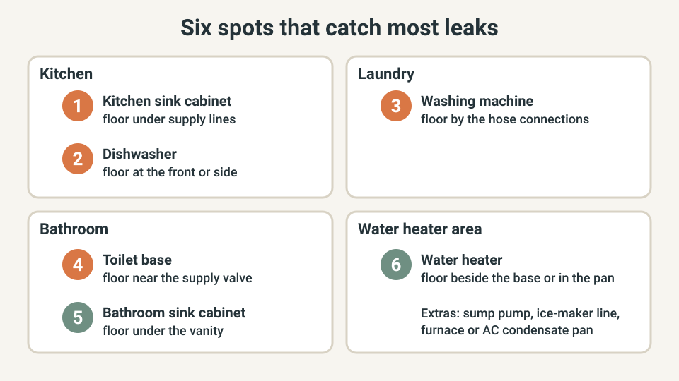
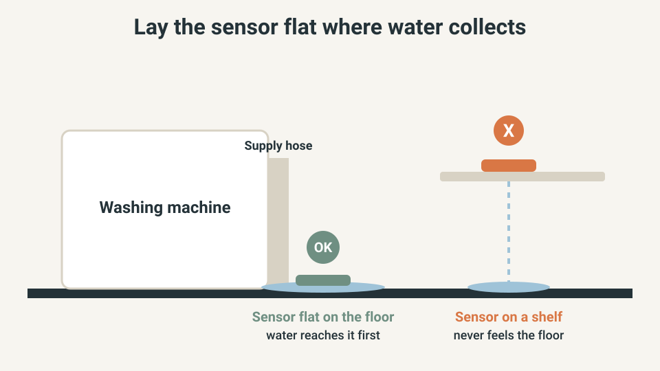
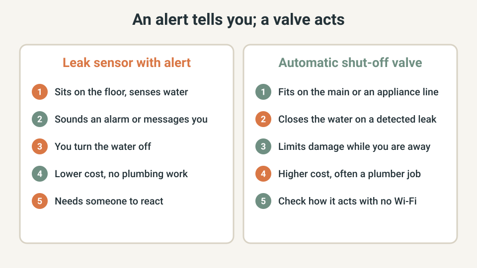

SMART HOME · LEAK SENSORS
Where to Put Water Leak Sensors: Six Spots That Catch Leaks Early

A slow leak under a sink or behind a washer is easy to miss until a stain or a musty smell shows up. A leak sensor is a small device that sounds an alarm or messages your phone when water touches it, but only where you put it.
This guide shows the six spots that matter most, how to place a sensor so it works, and whether you also need a shut-off valve. No plumbing skill is needed for the sensors.
The quick answer
- Start where a hose, supply line or tank can fail: washing machine, dishwasher, kitchen sink, water heater, toilets and bathroom sinks.
- Lay each sensor flat on the floor at the lowest point beside the fixture. A sensor on a shelf cannot feel water on the floor.
- A basic sensor warns you; it does not turn the water off. A shut-off valve does, and it is a separate decision.
- Test every sensor after you place it, and check it again on a routine.
- If you find a drip while placing sensors, close that fixture's supply valve and fix it or call a plumber.
I am not a plumber. This is a planning guide built from insurer and safety publications and the device makers' own instructions. Follow your device's manual and local rules, and ask a licensed professional when in doubt.
Quick plan
| Item | Detail |
|---|---|
| Time | About 30 minutes to walk the house and place the sensors, plus a few minutes per sensor to pair and test it |
| Cost | Depends on how many you buy and on the type; check current prices for the brand you choose. A shut-off valve costs more and is often installed by a plumber |
| Best for | Anyone with a washing machine, dishwasher or water heater, especially if the home is often empty |
| Goal | An early warning at the spots where a leak is most likely, so you can shut the water off before the damage spreads |
Where leaks tend to start
The Connecticut Insurance Department's water damage pamphlet summarises findings from an insurance-industry study. In washing machine incidents, a burst supply line caused half of them, and the average damage was more than $6,000 per incident. Sink water damage averaged more than $7,000, and 44% of those incidents were blamed on faulty plumbing supply lines. For toilets, 78% were caused by faulty supply lines, toilet flanges, fill valve assemblies, or a backup and overflow.
These are US figures, and costs vary by home. The same pamphlet says roof leaks were the most frequent source overall. A floor sensor will not catch a roof leak until water reaches it, so treat sensors as one layer, not a full guard.
Step 1: Walk the house and mark six spots (10 minutes)
Walk through with a notepad and look for anything that holds or carries water. Chubb's guide to protecting a condo from water damage lists the same kinds of places: under the kitchen sink, the washing machine, a sump pump, the water heater, heating and cooling equipment, and each water-using device.

- Washing machine: the floor beside the hose connections and the wall valves.
- Dishwasher: the floor at the front or side, where water would run out first.
- Kitchen sink cabinet: the cabinet floor under the supply lines and drain.
- Water heater: the floor beside the base, or inside its drain pan if it has one.
- Toilets: the floor at the base, near the supply valve.
- Bathroom sink cabinets: the cabinet floor under each vanity.
Extras worth adding later: a sump pump, a refrigerator ice-maker line, and the condensate pan of a furnace or air conditioner. If you can only buy a few sensors at first, my suggestion is the washing machine, the water heater and the kitchen sink, because a failure there is easy to miss and can reach a lot of floor and cabinet.
Step 2: Put the sensor flat on the floor, where water collects (5 minutes per spot)
Water runs downhill and pools at the lowest point, so that is where a sensor has to be. Follow the maker's instructions for which side faces down, since most use contacts or probes on the underside.

- Empty the cabinet floor under a sink and place the sensor near the supply lines, not behind stored items.
- Beside a water heater, put it on the side where water would run first, such as the drain-pan side or the lowest point of the floor.
- Avoid a spot you mop or splash every day, or you will get false alarms.
- After placing it, check that the app or hub still reaches it. Basements and metal cabinets can weaken a wireless signal.
Step 3: Decide what the alert should do (10 minutes)
A sensor sounds an alarm or messages your phone, and then you have to react. An automatic shut-off valve goes further: Chubb notes that these valves detect unusual water flow, which can signal a leak or burst pipe, and shut off the main supply. They are especially useful when you are away.

| Option | What it does | Watch for |
|---|---|---|
| Sensor with a siren only | Sounds an alarm at the device | Helps only if someone is home to hear it |
| Sensor with a phone alert | Messages you through your home network or a hub | Check what happens when the internet is down; see the Wi-Fi outage guide |
| Sensor plus shut-off valve | Closes the water supply when a leak is detected | Higher cost, often a plumber job; check how it behaves with no Wi-Fi |
Makers' systems differ, so read what yours does. Some alarms can alert your phone, and some can shut off the water to an appliance or the whole home, according to BCAA's water damage prevention tips.
Step 4: Test it and keep it alive (5 minutes)
- Run the maker's test method for each sensor right after you place it, and confirm the alert actually reaches your phone.
- Put battery checks on a routine you already keep, for example when you check smoke alarm batteries.
- Every six months, look at the supply lines to the washer, sinks and toilets and operate each shut-off valve. The Connecticut pamphlet recommends this inspection and valve check.
- Replace old rubber washing machine hoses with braided stainless steel ones, as BCAA suggests.
- When you leave for more than a day, turn off the washing machine supply valves. The Connecticut pamphlet advises turning supply valves off when not in use.
Know where your main water shut-off is and tag it. A sensor only helps if you can then stop the water.
What a sensor cannot do
A sensor reacts only to water that touches it. It will not warn you about a leak inside a wall until water reaches the floor, and it does not stop a leak. A fogged mirror or wet walls after a shower are usually condensation, not a leak, so see the bathroom condensation guide for that problem. Drips from a ceiling fan grille are usually duct condensation or a roof leak, and the dripping exhaust fan guide helps you tell them apart.
When to call a professional
- Water on the floor with no visible source.
- A supply valve that will not close, or a main shut-off you cannot turn.
- A leaking water heater tank or its fittings.
- A sensor that keeps alarming in the same place.
- Standing water near outlets, appliances or the electrical panel. Do not step in it; if you cannot cut power safely, call a professional.
US, UK and EU: where the spots differ
The six spots apply in most homes. In many UK homes you may also want sensors near the boiler, the airing cupboard hot water cylinder and any loft cold water tank. Sensor radios, plugs and approvals differ by country, so buy a model sold for yours and ask a qualified plumber about local rules before any valve is fitted.
What not to buy yet
- An automatic shut-off system, before you know where your main and appliance valves are and that they turn.
- A dozen sensors for rooms without water.
- A sensor that depends on an app subscription you have not read about.
- A sensor you cannot test, or whose alert you cannot see on your phone.
Quick win (10 minutes)
Find your main water shut-off and tag it. Then check the washing machine hoses and wall valves for wear or wetness, and place one sensor on the floor beside the washer connections. That single sensor covers a failure point the Connecticut pamphlet highlights.
Common mistakes
- Placing a sensor on a shelf or the machine instead of the floor.
- Hiding it behind stored items where water may not reach it.
- Never testing the alert.
- Forgetting the batteries.
- Assuming an alert will reach you when the internet is down.
- Ignoring stiff or seized shut-off valves.
Frequently asked questions
How many leak sensors do I need?
One for each place where a hose, supply line or tank could leak, which is usually the six spots in this guide plus extras such as a sump pump or a condensate pan. There is no official number. Start with the washing machine, water heater and kitchen sink, then add the rest as your budget allows.
Will a leak sensor turn the water off?
A basic sensor only warns you, with a siren, a phone alert or both. Some systems pair a sensor with a shut-off valve that closes the water, but that is a separate and usually pricier product, so read what the box says it does.
Do leak sensors work without Wi-Fi?
It depends on the model. Many have a built-in siren, but phone alerts need a connection through your home network or a hub. Check the maker's manual, then see the Wi-Fi outage guide to learn what stops working when your internet drops.
Can I use leak sensors in a rental?
Sensors that sit on the floor need no tools or plumbing work, so they are usually easy to use in a rental. An automatic shut-off valve involves plumbing, so ask your landlord first.
Will my insurer give me a discount for a leak sensor?
Some insurers offer premium credits for an approved leak device, according to an insurance-broker guide. Ask your insurer which devices count and what they expect you to do when the home is empty.
Keep going
- Test what still works when your Wi-Fi goes down
- Smart home privacy check: lock down your devices in 10 minutes
- Reduce bathroom condensation